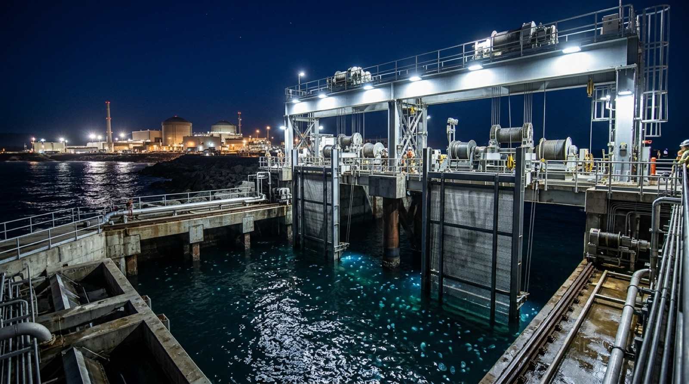
Alert → one button
Deploy in ~10 minutes
A jellyfish early-warning alert reaches the control room. The operator presses one button and JAZR lowers into each of the four intake lanes.
4 lanes~10 min
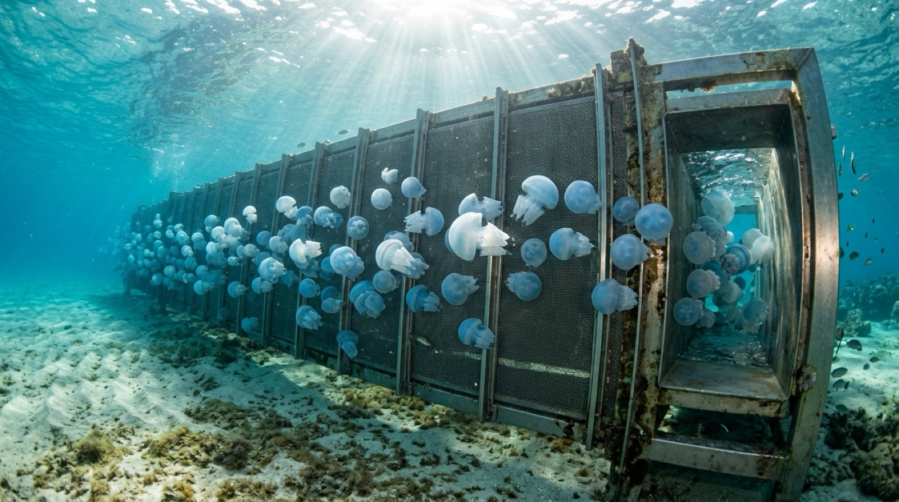
The plant keeps running.
The sea keeps living.
A one-button, no-harm jellyfish defence for a coastal nuclear plant’s seawater intake. It keeps a bloom off the plant’s screens and returns the animals to the sea alive.
Not a concept. A system.
of the bloom kept off the plant screens — 100% today → ~1%
released alive — two estimates; target ≥95%
crew-hours spent fighting a bloom
to deploy in all four intake lanes, one button
engineering checks
automated tests
real alert windows replayed
bells guided in the virtual tank
browser twin vs Python model
of plant output in energy
All figures are in simulation, from the team’s engineering models.
How it works
An early-warning alert arrives. The operator presses one button. In about ten minutes JAZR is deployed in each of the four intake lanes — and the plant’s own screens are never touched.
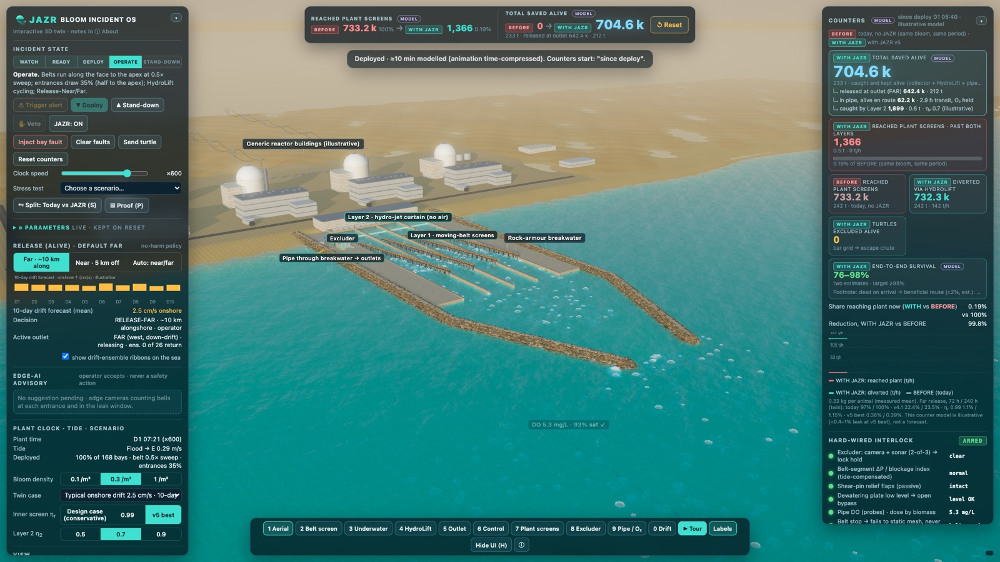

Alert → one button
A jellyfish early-warning alert reaches the control room. The operator presses one button and JAZR lowers into each of the four intake lanes.
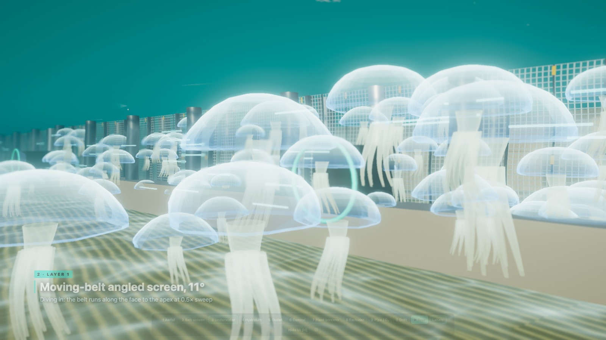
Layer 1
An 11° screen with a moving belt carries bells along to an apex entrance. Flared entrances take 15–35% of the lane flow, so animals are guided, not pinned.
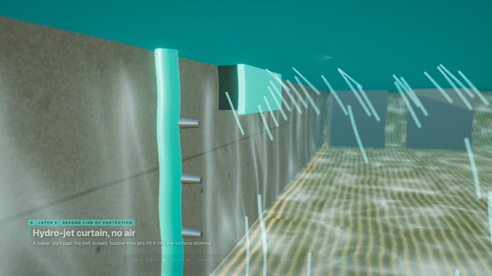
Layer 2
Any leakers are lifted by a curtain of water jets to a surface skimmer. No air: air trapped under a bell kills jellyfish.
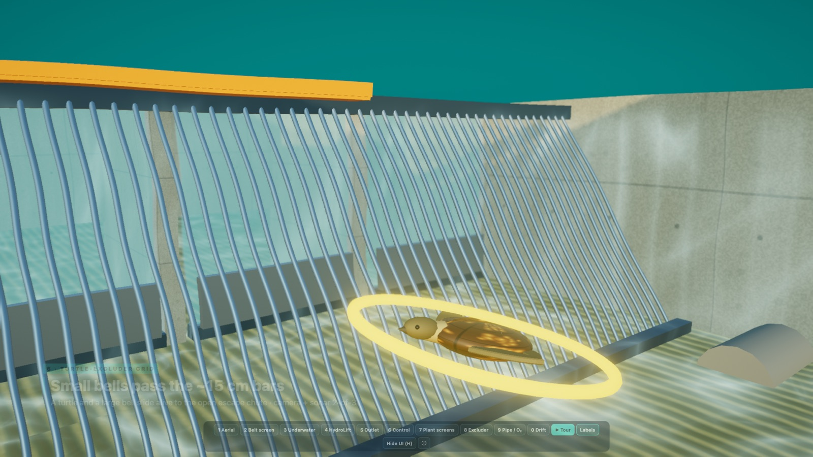
Dewater + protect
Flat-plate dewatering, then a grid with ~15 cm bars. Turtles and big bells take an escape chute, alive. Camera and sonar back it up with a 2-of-3 vote.
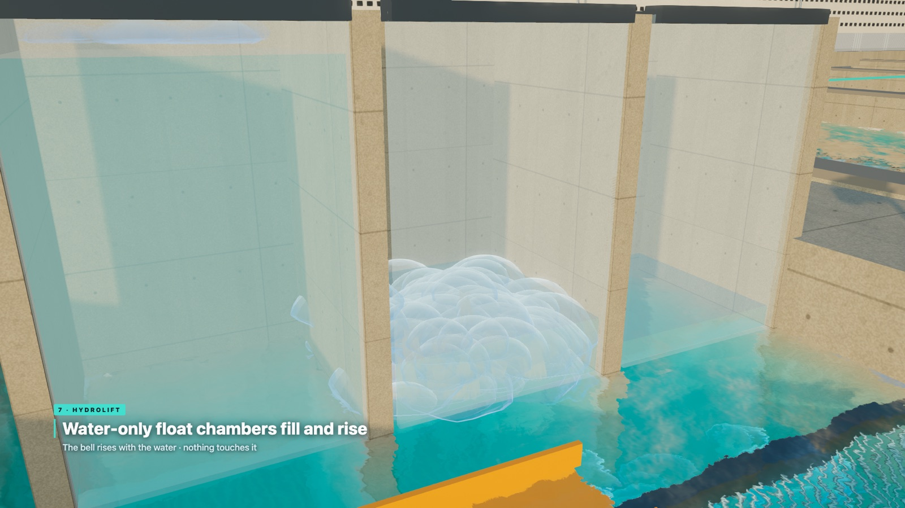
HydroLift
Chambers fill and rise, floating the animals up with the water. Nothing touches them.
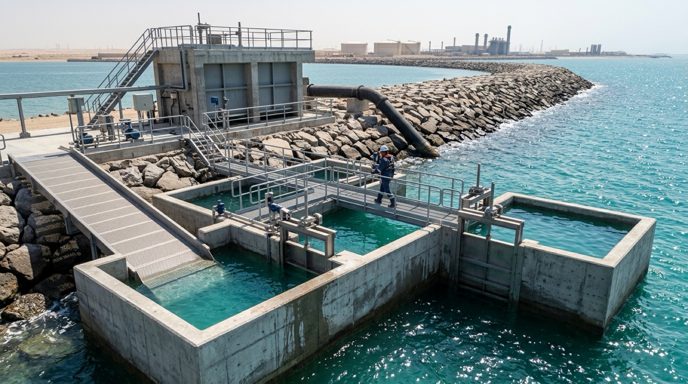
Head tank
A head tank tops up dissolved oxygen — no bubbles — and feeds a 1.6 m gravity pipe through the breakwater.
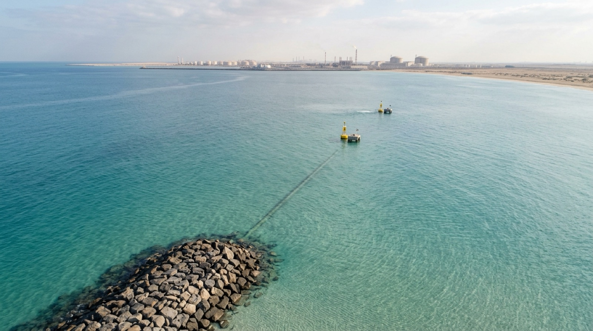
Drift forecast
A 10-day drift forecast picks where to release: Near (5 km out) or Far (~10 km alongshore), so the bloom does not drift straight back.
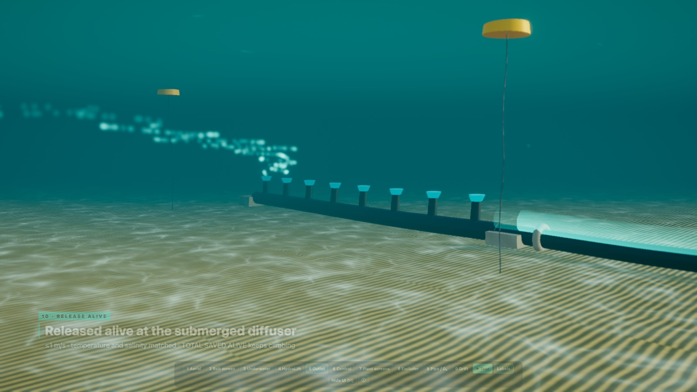
Release
Animals leave through a submerged diffuser at ≤1 m/s — gentle enough to release, not to injure.
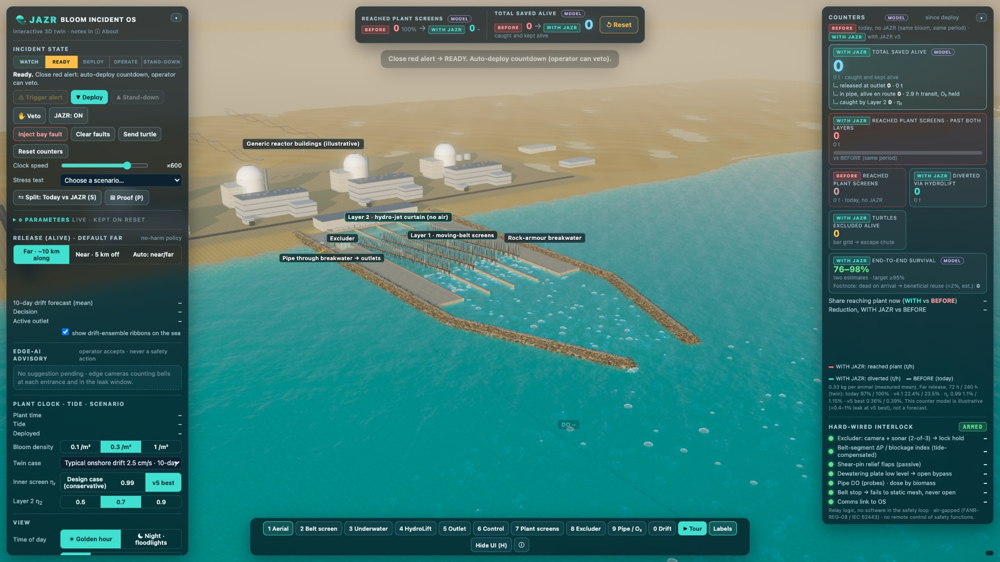
Bloom Incident OS
Auto-deploy with operator veto. Hard-wired interlocks. AI is advisory only and air-gapped. Shear-pin relief means any failure leaves today’s plant — never worse.
Before vs with JAZR
Today, the whole bloom reaches the plant screens. With JAZR, about one in a hundred does — in simulation.
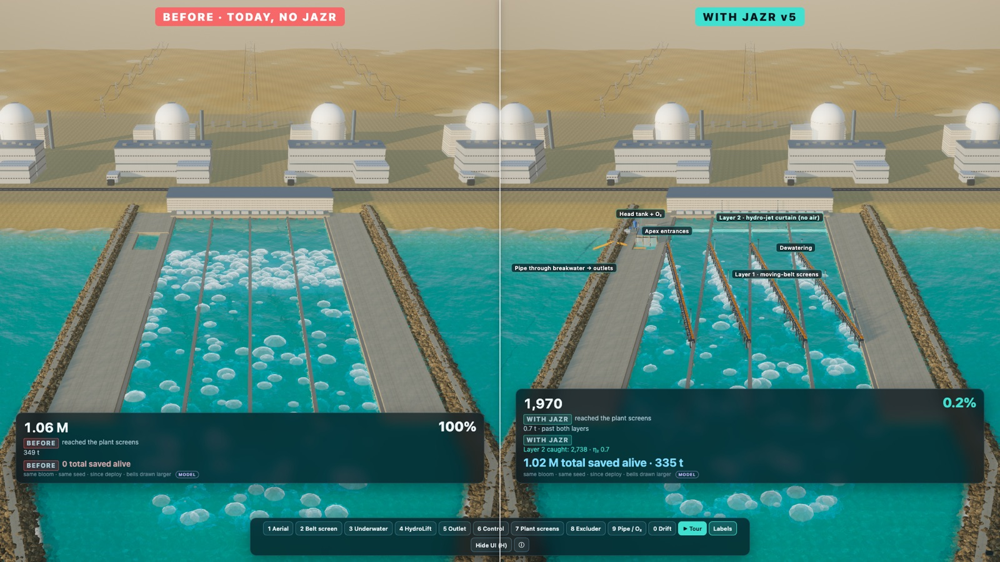
The prototype
Three working pieces of software, live in your browser — no install.
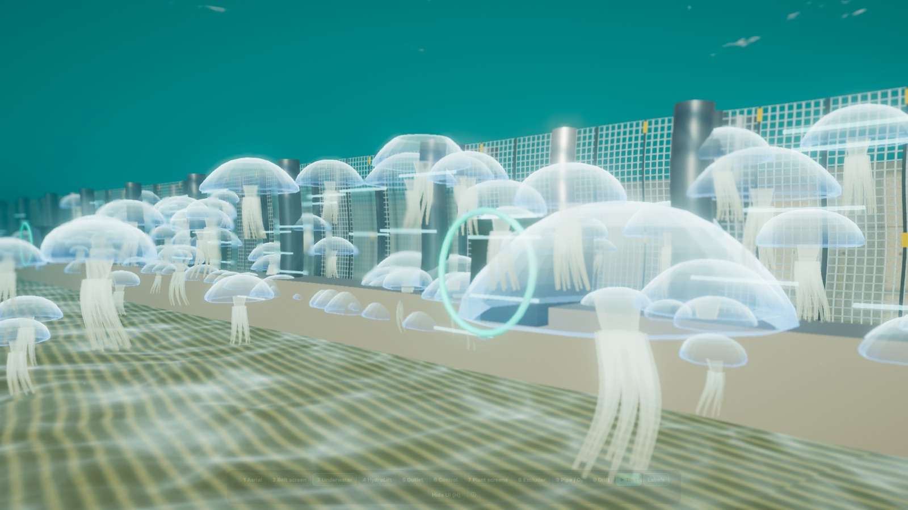
The whole intake in real time: belt screens, hydro-jets, excluder, HydroLift, pipe and outlets. Guided camera stops and a before/with split.
Open twin ↗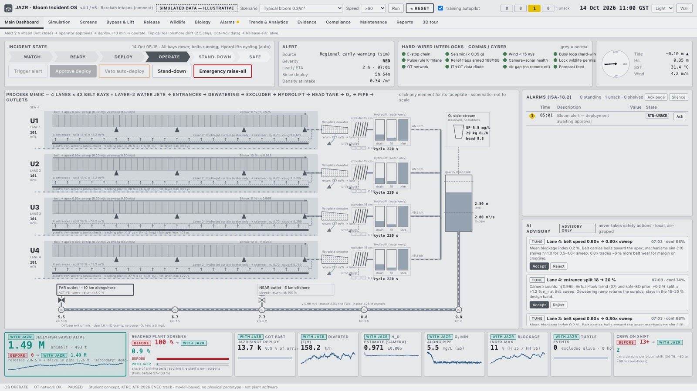
The operator’s console: from alert to auto-deploy with operator veto, across all four lanes.
Open dashboard ↗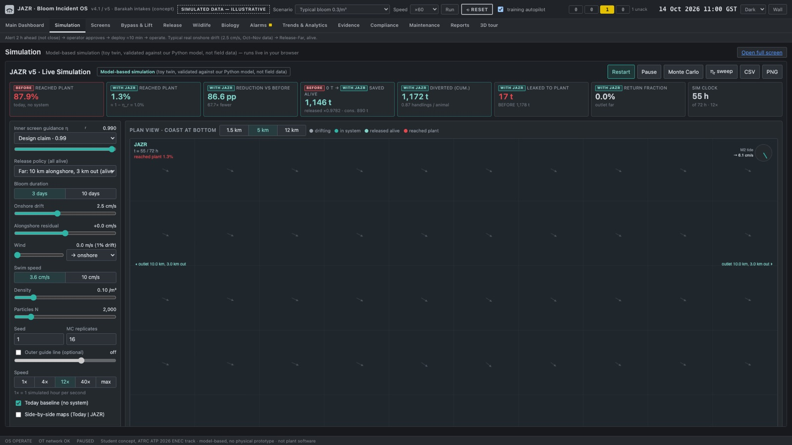
Open the dashboard and choose the Simulation tab. Run a bloom through the model and watch the outcome update live.
Open simulation ↗Films
No harm by design
Every stage was chosen so the animal leaves the way it arrived.
Water-only jets and lifts. Air trapped under a bell kills it.
Animals are guided and floated, never caught, crushed or macerated.
No sound or electric deterrents — guidance is by flow and structure alone.
~15 cm excluder bars and an escape chute, with camera + sonar backup.
Dissolved oxygen in the head tank — no bubbles.
Animals stay in their own seawater from intake to release.
Near and Far release points sit away from reefs; the drift forecast picks one for each release.
Evidence & honesty
Honest note: there is no physical prototype yet. Every number on this page comes from models and simulation.
Next step
Gallery
JAZR · جَزْر
The team · IIT Delhi – Abu Dhabi